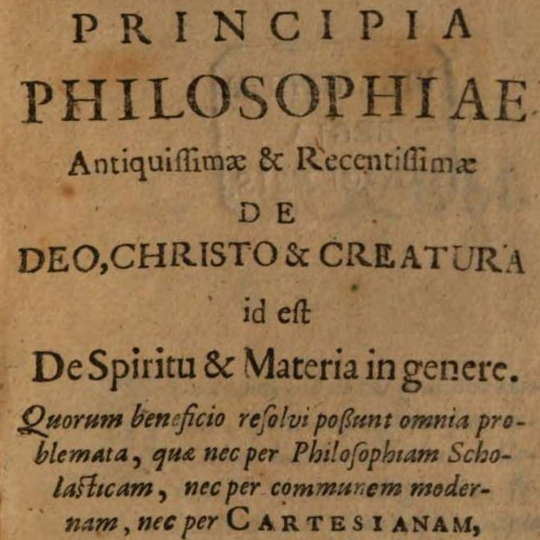

Conway’s Principles
Wed., Feb. 13
In this class, we leave Descartes and begin discussing some figures directly or indirectly influenced by Descartes’ problematic interactionist dualist views on mind and body. Most of the focus is on Anne Conway, who (like several other English philosophers of the time) developed the idea of an extended soul. In Conway’s monist metaphysics, there is no essential distinction between mind and body. Instead, the created universe consists of spirits and bodies that only differ in degree of spirituality, so that a spirit can change into a body and a body can change into a spirit. Attributes like extension, divisibility, and penetrability can be applied to bodies and spirits alike, and all created things have some degree of life and perception. Arguably Conway does better than Descartes at at explaining mind-body union. Other metaphysical systems that address the issue include Spinoza’s double-aspect parallelism, Malebranche’s occasionalism, and Leibniz’s pre-established harmony.
Key Concepts: Mind-Body Union, Conway’s Monism, Double-Aspect Theory, Occasionalism, Pre-Established Harmony
Readings:
required
Powerpoint Slides:
N/A
Other Resources:
Early Modern Texts
Stanford Encyclopedia of Philosophy